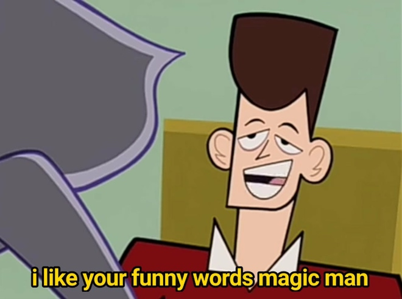
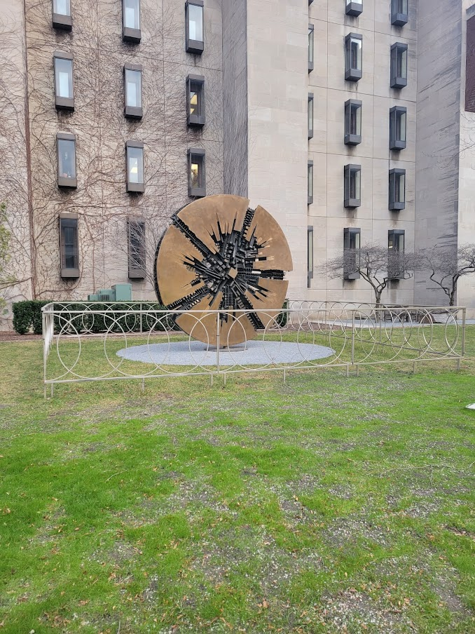
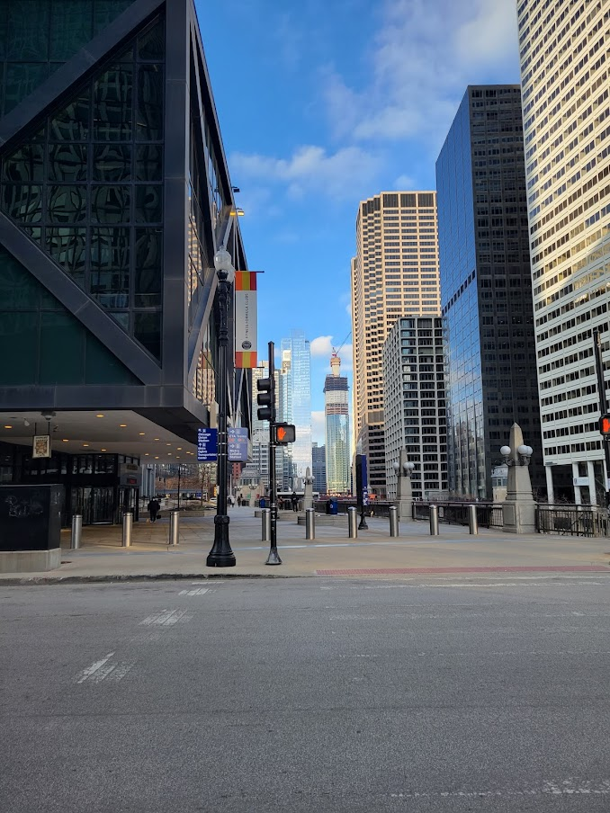
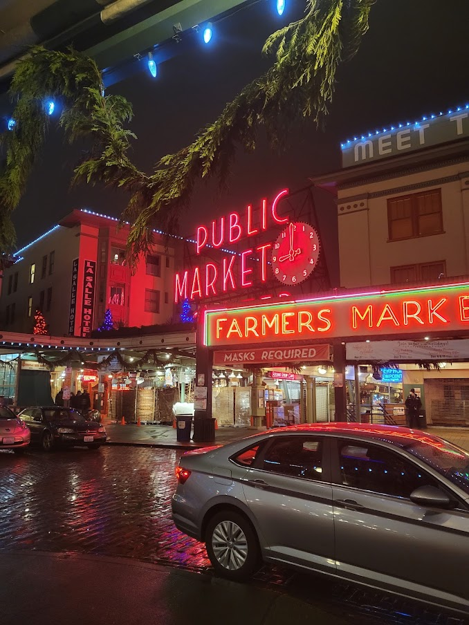
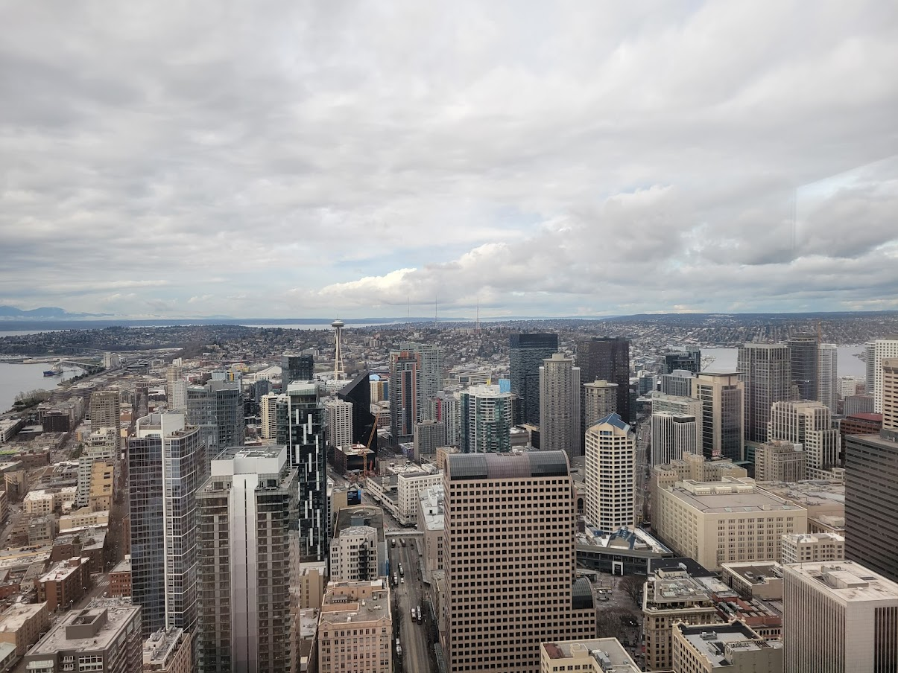

I still believe reflection is good and I can't exactly say it's hard to find the time. I think it's harder to find the motivation after working the entire day. I'm 8 months into my first job outside of college and the stuff I work on is somewhat interesting. I get the feeling that there's so much I still need to learn and an inkling of imposter syndrome, but maybe that feeling never goes away. Maybe the universe of things to know is infinite and everything we learn is a drop in an infinite bucket. The only meaningful comparison then only exists between what we know now and what we knew in the past.
In the spirit of recording the general feeling of my days at this point in time, I sit in front of a computer from around 9 to around 5, give or take some time depending on projects. Then give or take some more time depending on how many times I remember to get up over the work day. It's not physically demanding. Or maybe it is in the sense that humans of the past were active and this runs counter to what our ancestors have done. In which case, it is physically demanding in that it isn't physically demanding. After work, I spend what time I have with friends and family. Playing games, getting food, watching shows, going on walks, and going to random events. Maybe this is what life will be like until the end? Is this the kind of future I imagined? Is this what I want to do for the rest of my life? It's not a bad life and it's not a bad job. Maybe I'm looking for meaning in the wrong place. In the end, it's a job, it pays the bills, I'm learning new things, but time flies by faster than I would like to admit. Or maybe I mentally block out the time it takes for Rust to compile and that's where the time goes.
Looking back on my time in college. I do have some regrets. I wish I spent more time interacting with and meeting people. The last two years were a bit rougher in that aspect, with the pandemic and all. I think the best times I've had back in college was when I was working on things with people and when I was TAing. I think one thing I could've improved on was being more respectful of time, my own as well as others'. I had office hours pretty frequently, helped other TAs, and held extra office hours. At UW, TAs usually had to hold at least one hour or so of office hours a week and probably teach a section or two. This was the expectation and it was met most of the time, but it sometimes felt like there was an unequal amount of effort that was put in among TAs. My office hours were scheduled for one hour but would often end up spanning multiple hours and on occasion extend past midnight. It's crazy how some students stayed up during those times to attend. I know that if students didn't get help at the exact moment they encountered issues, it wasn't the end of the world. Everyone was smart, capable of learning, and accomplishing things that they set their mind to and I trusted these students to figure things out and ask questions when they're stuck. It was probably on me to as the person in the position of authority to set these boundaries, but I felt like these were unprecedented times and that people should get as much help and support as they need.
I TA'ed several professional masters classes and most of the other TAs had office hours during the day, which is when people were working or had meetings, so the only office hours that really worked were the ones after normal working hours, which were only held by a few TAs. I was pretty impressed by these students. Like after working their full-time job during the day, they still pushed themselves to continue learning and working on things like homework and going to classes at night. This is like having two jobs. Many people had families as well, which to me is kind of crazy and commendable. I guess the same thing goes for people who work while going to school, have multiple jobs, or like volunteer after work.
TAing came at a cost though. This often cut into time for my own work, especially work on group projects and research, which during the masters portion of my time at UW was generally open-ended and exploratory. This led me to have the mindset of speedrunning work to try to stay on top of things, which for personal development reasons is detrimental. I am grateful to all my friends who helped me out during this time. I was in school for a bit more than 17 years of my life. School and CS are not personality traits. I need to develop myself more. as a person. I need to cook more, learn more, and try new things to go out of my comfort zone. I'm not sure how people would describe me. I hope positively, but each person is different so it's somewhat reasonable to believe that each person's perception of you will be different. Maybe the way I talk is too safe? With uninvested language like somewhat, probably and okay. Maybe this can be attributed to a desire for safety? Maybe I don't like being wrong; but being wrong, not being good at things, and failing are a part of life.
It's kind of wild though. Like the number of people you can meet when you go to college. It's hard to meet people outside of work nowadays. I actually have to put in effort to go out and do things to meet new people. Anyways, in college there's occasionally the big-brained person you meet and you kind of just wonder how things work in their world. Like their thought process and how they interpret problems and ideas. Is it experience? Good intuition? A mix of both? Some people say that it just makes sense to them or that conclusions are direct. It's like reading a paper and the proof says something like, "The conclusion directly follows." But it doesn't seem like it directly follows for you and you spend like two hours staring at a proof trying to rederive the conclusion and it feels more like "the proof is left as an exercise for the reader" rather than "the conclusion directly follows". They don't know everything and they will openly admit that they don't know some things, but that doesn't stop them from trying to understand them. Most seem to be optimistic about problems. Maybe some even view it as a challenge to overcome. Like a boss in a video game and the video game is life. I think these are the types of people who end up becoming professors and researchers. They likely don't consider themselves to be big-brained. Maybe we're all big-brained but in different ways and we just don't recognize it. Or maybe everyone just has imposter syndrome. I fervently believe that you don't need to be big-brained in order to know things or to be successful. Although being big-brained doesn't hurt, but maybe becoming big-brain doesn't happen overnight and it's something that's developed over time, forged in the flames of interesting challenges and quenched in the waters of curiosity. I aspire to be big-brain in one aspect or another one day, but how that might happen is kind of blurry.
I'm out of school now. Working feels like there's more free time after work, but I think work takes more time than school. There's no homework and people generally don't need to work on weekends (depending on company), but the time invested from 9 to 5 every day for five days a week for ~52 weeks a year give or take some vacation takes more time than school. We don't get summers off and doing internships during the summer was probably a taste of that. Having money is nice, especially since I grew up essentially without an allowance. Making money starting in college and after is nice because that meant I could hang out with friends, go get food, and go to concerts. But at what cost? There's increased responsibility and there's a certain finality to all of it. There are consequences in the real world. Failing a class or test isn't the end of the world in college, but missing a deadline or burning out may have significant impacts at work. Or maybe it's the same as college, since immediate issues we think are a big deal don't really seem like big issues after some time passes. Like the perceived severity of issues is an exponential moving average and only the more recent points stand out more, but in the grand scheme of things, problems don't really matter in the long run. Now that I'm working, I have more time to try to build solid foundations and good habits to try to navigate through early adulthood, but like many things in life, it's still a work in progress. Maybe one without end, except for the End. If we stop improving, stop learning, maybe that's the end for us anyways?
I find myself spending more and more time thinking about inequality. I am incredibly privileged and grateful to be able to get to where I am, but I'm not so daft as to think that I got here with hard work or luck alone. I was able to get to where I was due to being in the right place at the right time. Being born into the family I was born into. Going to school where I did and making the friends I made. How we are raised has a big impact on who we are today. What values are instilled into us and what we believe is important in our lives. We are who we are because of the people around us, our experiences, and our ideals. We do not start life as a blank canvas of infinite possibilities, we start life as an mishmash of colors and ideas and we paint over it with the choices we make. Over time, I've started thinking more about inequality and just how unfair the world is.
We all have some amount of time in our lives, some have more and some less. The amount of time we have is intrinsically unequal. This inequality is partially due to our choices, but it seems like it's mostly due to circumstances outside our control. We can be born into poverity or excess. I'm not trying to be fatalistic and saying that social mobility doesn't exist or that our choices don't matter. I wouldn't go as far as to say that, but I will claim that it is becoming harder and harder to move up in the world. The wealth gap keeps increasing and the dollar keeps getting devalued which creates an unequal impact between the rich and the poor. Like losing out on 10% of a paycheck might be the difference between food on the table or not, while losing 10% of a lot of money is still a lot of money.
I remember back in middle school, my dad used to buy chicken teriyaki at a local teriyaki place for $3.99 a plate. A few years later, the price increased to $4.99. Now the same teriyaki place sells the same teriyaki for ~$12.49 after tax and tip. It's about 3x the cost for the same teriyaki. I don't blame the business owners because they don't control inflation. They choose the price they believe their product is worth and it's not like they're trying to get rich making chicken teriyaki. They just want to make a living and serve good, affordable food. It is the same chicken teriyaki I had as a kid, but the price was ravaged by years of inflation. It makes me feel like one of those old people that were like, "Back in the day, I could buy a bottle of coke for a nickel!" and I guess I have a taste of how it feels now.
Another example of this is how my dad says that back when he was in college, he would be able to afford an entire year of tuition by working over the summer. Apparently it wasn't that crazy of a thing and it's not because he had a fancy tech job or worked at a large business, he paid for this year of tuition by working as a waiter at a restaurant. Because tuition wasn't as high back in the day. Nowadays, people pay for tuition with the help of their parents, student loans, or if they're lucky and in an engineering field/business, summer internships. It's possible that the quality of education changed, but I don't think it's changed so much that it justifies the price increase. At the University of Washington, the cost of tuition right now for a quarter (2021-2022) is around $4,026 for in-state students and back in 1971, it was around $165 a quarter for in-state students. Adjusted for inflation, this would be around $1,198.57. This is around a x4 increase, which is kind of insane since I don't think the quality of education has improved by x4.
The fight for a $15 minimum wage started in 2012 and it's still not really a thing. Minimum wage back in 1970 was around $1.45. Adjusted for inflation, this would be around $11.09. The federal minimum wage is currently $7.25 per hour. One dollar back then is worth $7.65 today. Median rent in 1970 was $108, which adjusted for inflation is around $810.73 today, but the median rent back in 2020 was $1,104. Median rent has increased by almost 50% and the minimum wage has decreased by 35%, so it's not exactly a surprise to learn that people are hurting and unable to survive in today's environment.
The 40-hour work week started in 1938. Some companies and countries have experimented with or proposed 32-hour workweeks/4-10 hour workweeks. I remember seeing this article on the impacts of a 4-day workweek in Microsoft Japan back in 2019. It seems like labor practices in many places around the world are more favorable to workers than the United States. Many places in the world seem to more favorable to live in in general than the United States, with healthcare that isn't tied to employment and better transportation services, at perhaps the cost of reduced wages.
We decide how we spend our time with the choices we make. We try to build good habits. Who we are and what we do seem to be a function of time, among many other things. It takes time to do things. It takes time to get better at doing things. It takes time to develop relationships. We spend time doing what we care about and if we don't find the time to do something, maybe we just didn't care about it enough to find the time. Or maybe we actually have no time, which might be the case if we're just trying to survive in the world that functions by trading time we have for essential needs like housing, food, and health. Although I believe that anyone who works and contributes meaningfully to society should be able to afford housing and food without compromising their physical and mental well-being.
It's been a couple of years. A lot of things have happened, yet lots of things haven't happened, and many more things have yet to happen. It's hard to imagine that we somehow got to where we are from where we were; but we're here, for better or worse.